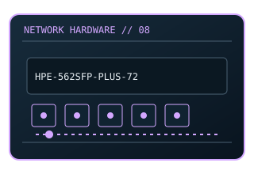

[ MODEL-SPECIFIC NETWORK HARDWARE ]
HPE Ethernet 10Gb 2-port 562SFP+ Adapter (727054-B21)
HPE-branded dual-port SFP+ adapter; 727054-B21 is the option part number. This entry uses the labeled manufacturer model identifier and cites primary product/support documentation.

MODEL IDENTIFICATION: Match the complete model/part number and hardware revision on the item label to manufacturer documentation. Do not apply this entry to near-name variants.
Exact specifications and compatibility
| Cataloged model | HPE Ethernet 10Gb 2-port 562SFP+ Adapter (727054-B21) |
|---|---|
| Dedicated subcategory | 10 Gigabit and server adapters |
| Bus / host interface | PCIe server adapter. |
| Ports / physical interfaces | 2 × SFP+; 10GbE optical/DAC media subject to HPE compatibility list. |
| PHY, radio or protocol | Ethernet 10GBASE-R; adapter firmware and host driver are HPE-system dependent. |
| PoE | No PoE input or PoE output is documented for this product. |
| Link-rate vs throughput | 2 × 10 Gb/s nominal full-duplex link capacity; no physical-card benchmark claimed. Link rates are nominal negotiated/PHY specifications, not measured application throughput; no measured specimen result is claimed. |
| Firmware / driver support | HPE network adapter driver and firmware bundles; supported servers/OS are listed by HPE. |
| Compatibility checks | Check server generation, supported transceiver list, PCIe slot, and option-kit bracket. |
Model-specific notes
HPE option-kit compatibility can be narrower than electrical PCIe fit.
Primary manufacturer sources
- HPE 562SFP+ adapter QuickSpecs / product documentationManufacturer product specification or documentation for the exact model/family.
- Manufacturer support and compatibility resourcesFirmware, driver, compatibility, revision or support details; applicability may depend on the exact hardware revision and region.
Vendor maximum rates are not test results. Confirm regional variants, hardware revision and current support status with the manufacturer.